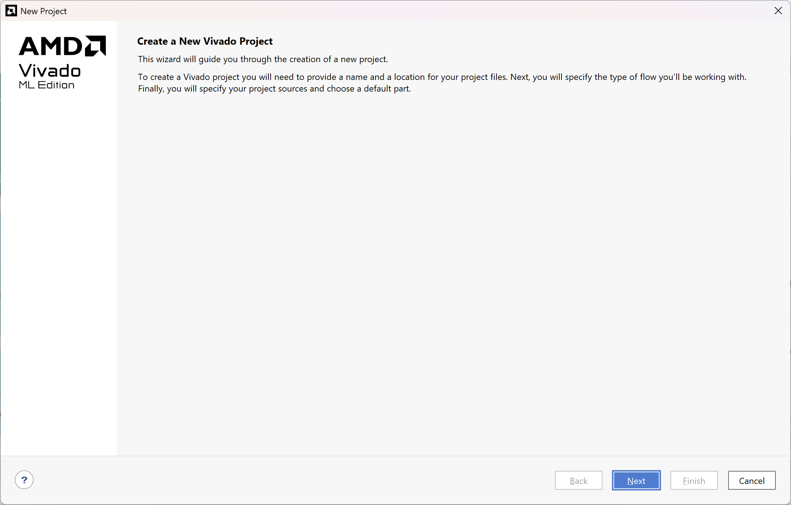
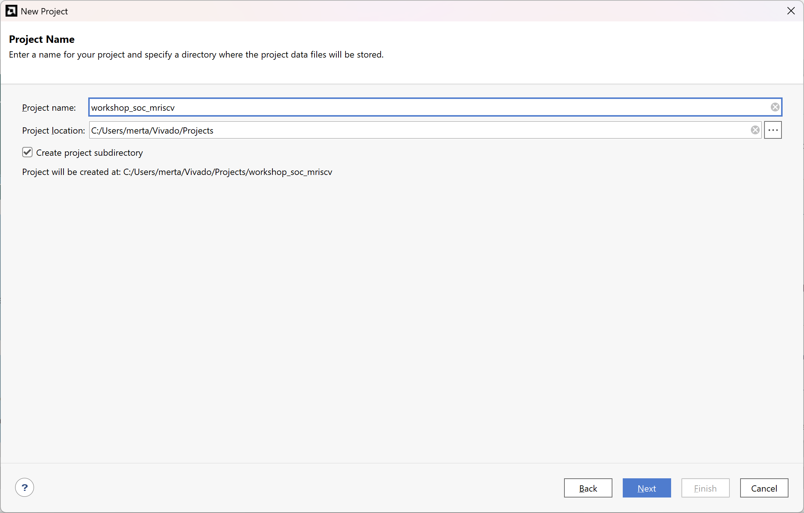
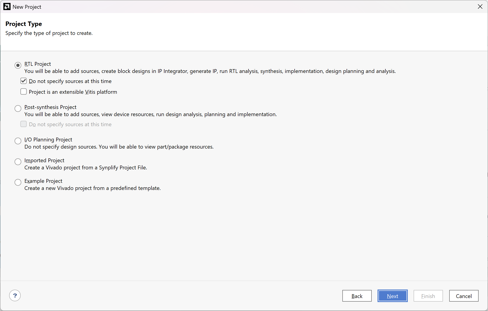
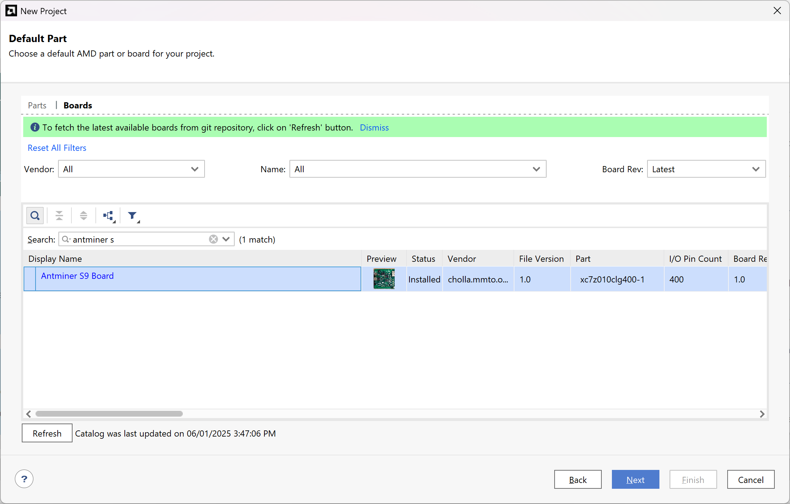
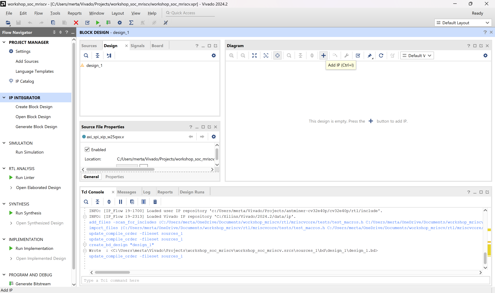

Buka aplikasi Xilinx Vivado

Versi Xilinx Vivado yang digunakan adalah 2024.2
Klik Create New Project..., lalu klik Next 
Digunakan untuk membuat project baru
Beri nama dan lokasi project, lalu klik Next 
Nama yang digunakan adalah workshop_soc_mriscv dengan lokasi project berada pada Vivado/Projects/
Pilih tipe project seperti pada gambar, lalu klik Next 
Pilih Parts/Boards yang dipakai, lalu klik Next 
Boards/Part yang digunakan adalah Antminer S9 Board yang menggunakan chip Xilinx XC7Z010
Klik Finish

Tampilan Project Manager

Pada tab sources, klik kanan pada Design Sources lalu pilih Add Sources

Pilih add or create design sources

Pilih add directories

Pilih lokasi pada folder workshop_mriscv/rtl, lalu klik Select

Klik Finish

Pada tab IP Integrator, klik Create Block Design

Beri nama pada block design yang ingin dibuat, lalu pilih OK

Tampilan Block Design akan muncul lalu klik Add IP 
Ketik Microblaze V pada nama pencarian lalu Klik Microblaze V

Klik Run Block Automation

Atur opsi seperti pada gambar, lalu klik OK

Berikut tampilan Block Microblaze V